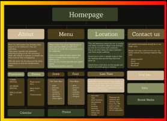
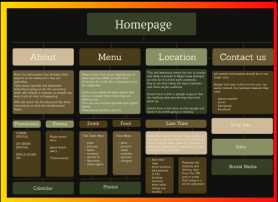

portfolio

My name is Kendyl Gill, I currently attend University of Waterloo for GBDA, and I’ve been interested in all types of art since I was little.
I attended Eastwood Collegiate Institute, an arts-oriented high school, where I was part of the Visual Arts program. I became interested in graphic design and business during my second year of high school and from then on I knew this is what I wanted to do.
Outside of school I work as a team lead at Roots, and often sell merchandise for country musicians during the summer.
My main design interests are branding, logos, illustration, clothing design and social media content.

I bring a strong mix of visual design, digital creativity, and problem-solving to my work. My skills range from branding, illustration, and layout design to interactive media and digital art. I’m experienced with Adobe Creative Cloud, Figma, and web-based tools, and I enjoy using design thinking to turn ideas into polished, engaging visuals. I’m always exploring new techniques.
My projects show my interest in both editorial and digital design. I created Irreplaceable, a magazine that focuses on identity and uses clean layouts and visuals to tell a story. I also redesigned a website for Kentucky, giving it a more modern look and making it easier to navigate. These projects reflect my style and the design skills I’m continuing to grow.
This magazine design explores the importance of life and why it is truly irreplaceable. To open the magazine, I used a quote from J. Cole—“no such thing as a life that’s better than yours”—because it captures the message I wanted to express. Throughout the magazine, I highlight different parts of life using images, layout choices, and visual storytelling. The “Living Fast” page features a photo of my friend’s car to represent youth and the desire to move quickly through life. The second spread focuses on experiences and includes a picture of my dad skiing, showing how moments like these shape who we are. I also included a section called “Life on Film,” emphasizing how important it is to document memories as life moves fast—physical photos make those moments feel more personal. Finally, I added a “Nightlife” section, reflecting a big part of many young people’s lives and using bold visuals to capture that energy.
For my Kentucky website redesign, I focused on giving the brand a fresher and more modern look. I improved the layout to make information easier to find and created a cleaner visual style with updated colors, typography, and images. My goal was to make the site feel more organized, welcoming, and user-friendly while still keeping the original identity of Kentucky. This project helped me explore web design, visual hierarchy, and how small design decisions can make a website much easier to use.
 

My Kentucky website redesign focused on bringing more clarity and personality to the brand’s online presence. I reorganized the pages to make information easier to explore and introduced a layout that feels more open and approachable. I also refreshed the visuals by choosing cleaner fonts, brighter images, and a more consistent style. The redesign aims to make the site feel welcoming, modern, and easier for users to connect with.